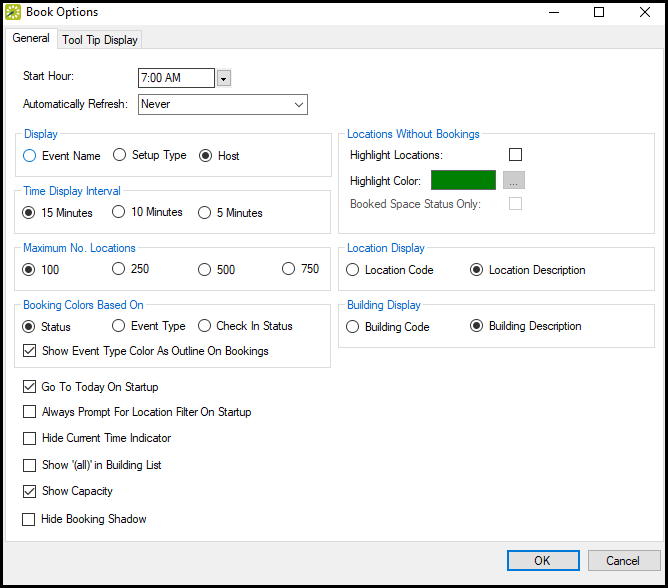
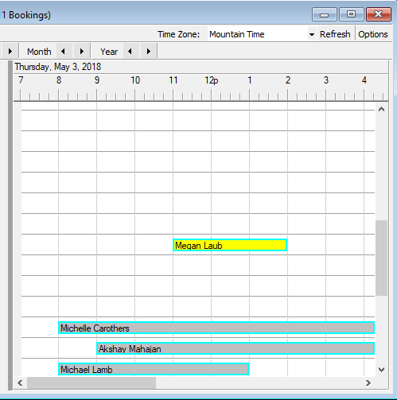

The Reservation Book provides a view of all the confirmed reservations (the reserved time as well as the room for which the reservation is scheduled) for your organization. (Canceled bookings are not shown.) You use the Reservation Book to view information for a reservation, to edit an existing reservation, and to make a new reservation. In addition, before you edit or make a reservation, you can change the Reservation Book display so it better suits your working needs.
In EMS, your organization's office is made up of locations, spaces, and users.
A physical area representing multiple spaces. Depending on how large your company is, it could be anything from "West Coast HQ" to a campus-level "Mail Room 6". and can contain multiple rooms, buildings, and other spaces.
Similar to locations, and area can also include multiple locations, and helps you group locations, buildings, and rooms by your own organization's
A physical building containing rooms, with pre-defined equipment and service options. Buildings belong to Locations.
Rooms with pre-defined equipment and service options. Rooms belong to a Building. You can think of the hierarchy like this: Your Company > New York HQ > Client Consultation Area > Central Park Building > Nicest Conference Room
When you add users in EMS, how you define their user profiles and booking templates control whether they will be able to schedule events in the rooms you've configured.
To open the Reservation Book, on the EMS toolbar, click the Book icon; a window opens where you can see all confirmed reservations for today. You can set Filters along the top, such as Building, View, and Date to change the events listed, and you can change the time zone displayed. All today's reservations that meet the filtering criteria are displayed in the book in the Daily view. You might have to scroll up and down to see all reservations.
You can only make a new reservation from here in the Daily View. You might also be able to Check In to events from here. You can customize the information that shows when you mouse over an event.
You can filter the Reservation Book to only show certain Rooms.

Click Reset at the top of the Rooms list to reset filters back to defaults.
Click Options (upper right) to open the Book Options dialog box where you can customize the display of the book and reservations in it.
As of Update 22, you can simultaneously view event type color and status color from the Reservation Book. See Also: Book Option Fields below.

|
Option |
Description |
|---|---|
|
Start Hour |
The daily start time for the Reservation Book display. |
|
Automatically Refresh |
The time interval at which the Reservation Book display is automatically refreshed. |
|
Display |
The information that is displayed in the middle bar for a reservation. |
|
Time Display Interval |
Changes the granularity of the time display interval. |
|
Maximum No. of Rooms |
The maximum number of rooms to display in the Reservation Book. |
|
Booking Colors Based On |
The color of the bookings in the reservation. Select one: Status, Event Type, or Check-in Status (for EMS Workplace only.) Show Event Type Color As Outline on Bookings: Check this box to simultaneously view Status and Event Type on the Reservation Book. For example, in the image below, the event type is yellow and the status is blue.  |
|
Rooms Without Bookings |
Whether to highlight rooms without bookings and if so, the highlight color. If both Highlight Rooms and Booked Space Status Only are selected, then only those rooms that do not have a Booked Space status are highlighted. |
|
Room Display |
Display the room code or the room name for a reservation. |
|
Building Display |
Display the building code or the building name for a reservation. |
|
Go To Today on Startup |
If selected, the Reservation Book opens to the current day’s date; otherwise, it opens to the last date viewed. |
|
If Show ‘(all)’ in Building List is also selected, then when you open the Reservation Book, the Room Filter dialog box opens on top of the Reservation Book. You can select different options on this dialog box to display only specific reservations in the book, for example, bookings only for selected rooms. If you do not select any options on this dialog box, but instead simply close it, then all reservations for all rooms in all buildings are displayed in the book. |
|
|
Hide Current Time Indicator |
Show or hide the vertical bar that indicates the current time for current day. The Current Time indicator is displayed only if the view is the Daily or Weekly view and the view includes the current day’s date. |
|
Show the “all” option on the Building drop-down list; otherwise, a user must select a specific building. If this option is selected in conjunction with Always Prompt for Room Filter on Startup, then when you open the Reservation Book, then the Room Filter dialog box always opens on top of the Reservation Book. If you are setting your Reservation Book options, and you do not want to the Room Filter dialog box to open on top of the Reservation Book when you open the book, then do the following:
The building, area, or view that you select is not important. This last step just clears the “all” building option from the Reservation Book cache and ensures that the Room Filter dialog box does not open on top of the Reservation Book. Going forward, you can always select all buildings, or any specific building, area, or view as needed when you are working in the Reservation Book. |
|
|
Show Capacity |
Show the minimum and maximum capacities next to the room description. |
|
Hide Booking Shadow |
Hide the vertical shadow bar that highlights the reserved and/or event start times and end times when a user moves a booking in the Reservation Book. |
In the Book Options dialog box, click the Tooltip Display tab to select which items to include in the tooltip that opens when you mouseover an event in the Reservation Book.